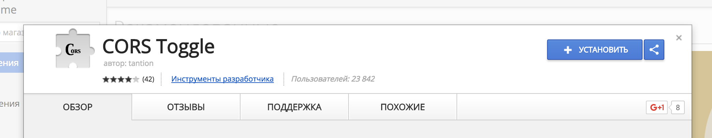
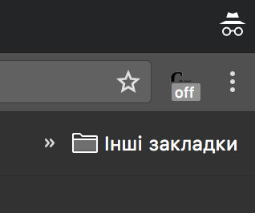

Привет! Это приложение предназначено для скачивания ваших фотографий из социальной сети вконтакте.
Для того, чтобы им воспользоваться, нужно выполнить несколько действий:
-
Установите плагин для вашего браузера, который выключает CORS (это опасная штука, поэтому после использования приложения её стоит удалить). Например, вот этот.
 -
Убедитесь, что плагин выключен, вот так:
 - Нажмите кнопку ниже и разрешите приложению доступ к вашим фото.